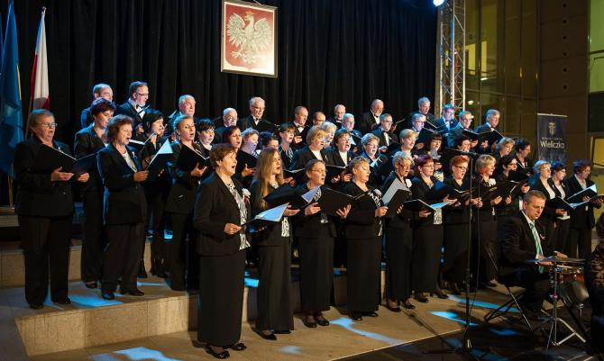
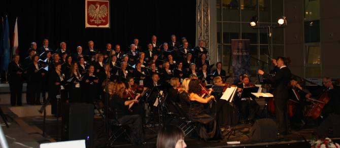
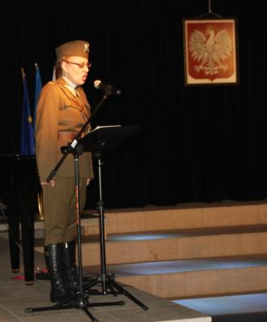
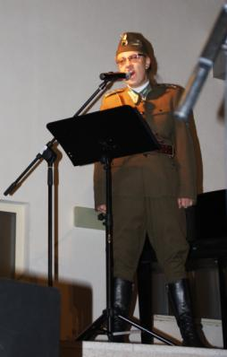
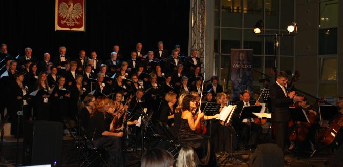
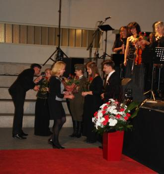
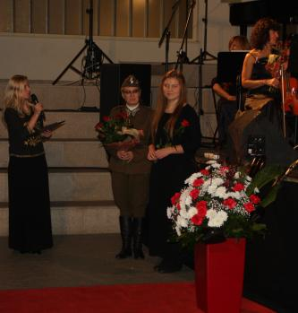
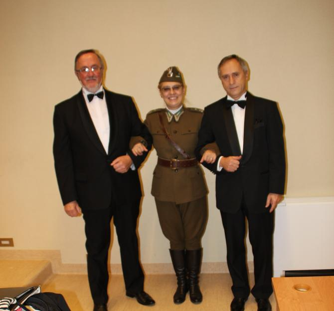

A tymczasem w Cameracie...
.
2015-11-11
Z okazji rocznicy odzyskania przez Polskę niepodległości, odbyło się wiele wydarzeń, które miały na celu pielęgnowanie narodowych tradycji. Uroczystości rozpoczęła Msza Św. w kościele św. Klemensa. Po niej przemarsz pod Pomnik Odrodzenia Polski, gdzie złożyliśmy kwiaty. O godz. 17 - Koncert muzyki polskiej w CER „Solne Miasto” pt. „Ziemio piękna! Ziemio moja! Bądź pozdrowiona!”, w którym bierzemy udział. 
Jako solistka występuje „porucznik ułanów”, Izabela Szota, nasza dyrygent.
 
Wszystkim akompaniuje Wielicka Orkiestra Kameralna pod dyr. Piotra Piwko.

Koniec koncertu. Jeszcze kwiaty i podziękowania.
 
Teraz chwila radości. Sto lat i życzenia dla Jubilatki.
I oczywiście „Pamiątkowe zdjęcia” :)


© Stowarzyszenie Muzyczne Chór Camerata Wieliczka
Projekt i wykonanie:  Prowadzenie strony: Małgorzata Wysocka-Cebula
Prowadzenie strony: Małgorzata Wysocka-Cebula